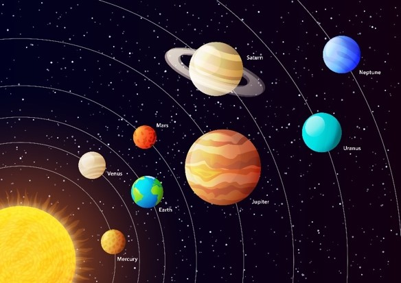

Haz click sobre el sol o alguno de los planetas

EL SOL
El Sol (del latín sol, solis, «dios Sol invictus» o «sol», Helios en la mitología griega, a su vez de la raíz protoindoeuropea sauel-, «brillar»)4 es una estrella de tipo-G de la secuencia principal y clase de luminosidad V que se encuentra en el centro del sistema solar y constituye la mayor fuente de radiación electromagnética de este sistema planetario.5 Es una esfera casi perfecta de plasma, con un movimiento convectivo interno que genera un campo magnético a través de un proceso de dinamo. Cerca de tres cuartas partes de la masa del Sol constan de hidrógeno; el resto es principalmente helio, con cantidades mucho más pequeñas de elementos, incluyendo el oxígeno, carbono, neón y hierro.
Se formó hace aproximadamente 4600 millones de años a partir del colapso gravitacional de la materia dentro de una región de una gran nube molecular. La mayor parte de esta materia se acumuló en el centro, mientras que el resto se aplanó en un disco en órbita que se convirtió en el sistema solar. La masa central se volvió cada vez más densa y caliente, dando lugar con el tiempo al inicio de la fusión nuclear en su núcleo. Se cree que casi todas las estrellas se forman por este proceso. El Sol es más o menos de edad intermedia y no ha cambiado drásticamente desde hace más de cuatro mil millones de años, y seguirá siendo bastante estable durante otros cinco mil millones de años más. Sin embargo, después de que la fusión del hidrógeno en su núcleo se haya detenido, el Sol sufrirá cambios importantes y se convertirá en una gigante roja. Se estima que el Sol se volverá lo suficientemente grande como para engullir las órbitas actuales de Mercurio, Venus y posiblemente la Tierra.
MERCURIO
Mercurio es el planeta del sistema solar más próximo al Sol y el más pequeño. Forma parte de los denominados planetas interiores o terrestres y carece de satélites naturales al igual que Venus. Se conocía muy poco sobre su superficie hasta que fue enviada la sonda planetaria Mariner 10 y se hicieron observaciones con radar y radiotelescopios. Posteriormente fue estudiado por la sonda MESSENGER de la NASA y actualmente la astronave de la Agencia Europea del Espacio (ESA) denominada BepiColombo, lanzada en octubre de 2018, se halla en vuelo rumbo a Mercurio a donde llegará en 2025 y se espera que aporte nuevos conocimientos sobre el origen y composición del planeta, así como de su geología y campo magnético.
Antiguamente se pensaba que Mercurio siempre presentaba la misma cara al Sol, (rotación capturada) situación similar al caso de la Luna con la Tierra; es decir, que su periodo de rotación era igual a su periodo de traslación, ambos de 88 días. Sin embargo, en 1965 se mandaron impulsos de radar hacia Mercurio, con lo cual quedó definitivamente demostrado que su periodo de rotación era de 58,7 días, lo cual es 2/3 de su periodo de traslación. Esto no es coincidencia, y es una situación denominada resonancia orbital.